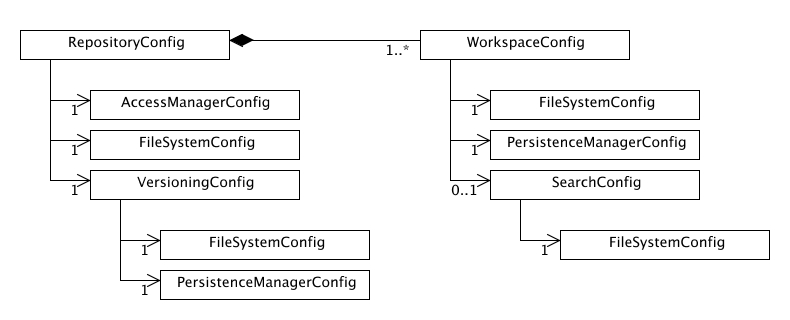

|
||||||||||
| PREV PACKAGE NEXT PACKAGE | FRAMES NO FRAMES | |||||||||
See:
Description
| Class Summary | |
|---|---|
| AccessManagerConfig | Access manager configuration. |
| BeanConfig | Bean configuration class. |
| ClusterConfig | Cluster configuration. |
| ConfigurationParser | Configuration parser base class. |
| FileSystemConfig | File system configuration. |
| JournalConfig | Journal configuration. |
| LoginModuleConfig | LoginModule configuration. |
| PersistenceManagerConfig | Persistence manager configuration. |
| RepositoryConfig | Repository configuration. |
| RepositoryConfigurationParser | Configuration parser. |
| SearchConfig | Search index configuration. |
| SecurityConfig | Security configuration. |
| VersioningConfig | Versioning configuration. |
| WorkspaceConfig | Workspace configuration. |
| Exception Summary | |
|---|---|
| ConfigurationException | Exception class used for configuration errors. |
Jackrabbit configuration handling.
This package contains functionality for reading and manipulating the Jackrabbit configuration. The configuration functionality can be divided in two parts: parsing and representing configuration.
The configuration parsing functionality is located in the
ConfigurationParser
class. The parser class reads repository and workspace configuration
files and builds corresponding configuration object structures.
The static create() factory methods of the
RepositoryConfig
class are the standard ways of invoking the configuration parser.
The parsed configuration information is represented using Config object
structures. The
RepositoryConfig
and
WorkspaceConfig
classes are used for the top-level configuration. Other configuration classes
are used according to the class diagram shown below.

In addition to the static configuration information, some Config classes
contain references to configured implementation objects. These implementation
objects are not instantiated in the Config constructors to simplify
configuration parsing. Instead the Config classes provide an
init() method that instantiates and initializes all
contained implementation objects.
The
RepositoryConfig
class contains also a set of static and instance methods for manipulating
the repository configuration, especially creating and loading workspace
configurations.
The configuration classes in this package are immutable to enforce the contract that the configuration should not be modified once it has been intstantiated. It is possible to subclass the configuration classes as long as the immutability contract is not broken. The public constructors allow a limited form of dynamic configurability for Jackrabbit, but note that the only officially supported Jackrabbit configuration interface are the XML configuration files.
|
||||||||||
| PREV PACKAGE NEXT PACKAGE | FRAMES NO FRAMES | |||||||||